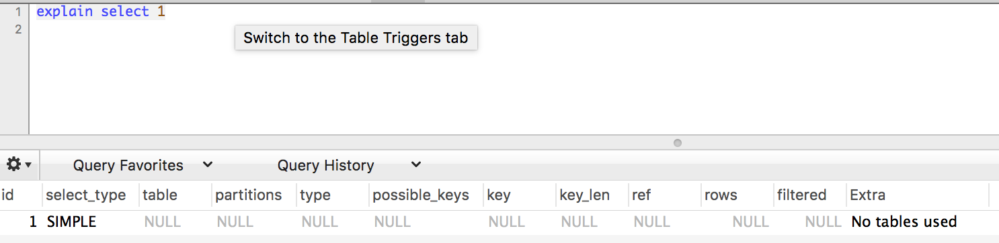
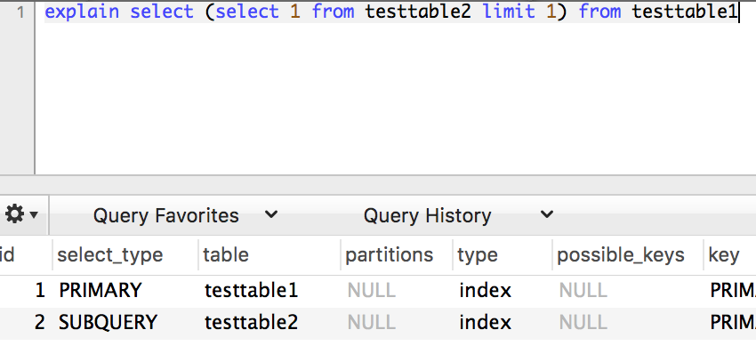
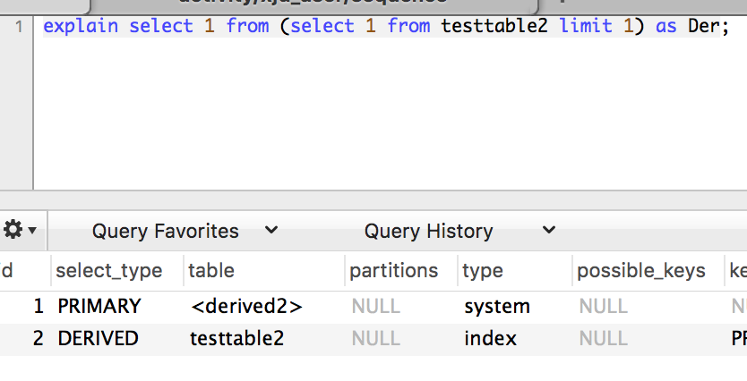
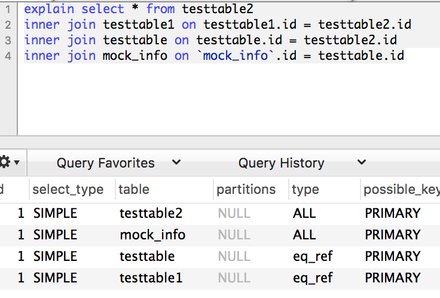
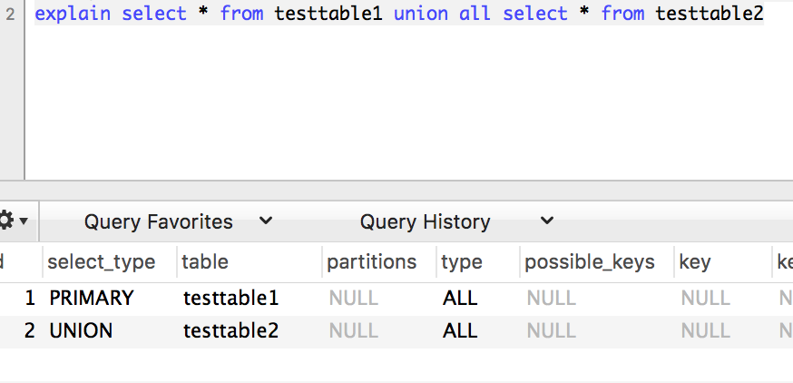
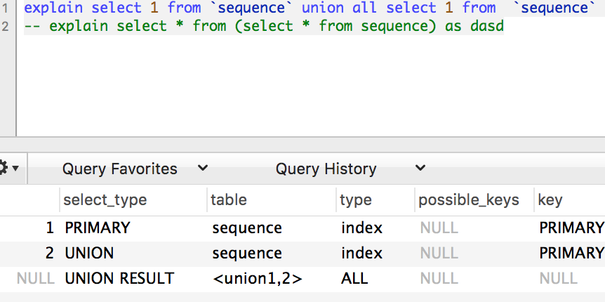

前言
由于开源简单等优势，mysql近几年也变得越来越火，最近看到一个报告，报告显示中国开发者常用的数据库中，mysql稳居第一，使用比例高达79.0%，而且在“全球开发者常用的数据库”中，mysql也稳居第一，高达55.6%。数据库的io一直是系统性能调优中非常重要的一环，写出好的sql语句也是开发者必须具备的基本素质之一，explain的合理使用也可以帮助开发者对sql语句进行相关的优化。这篇博文也讲讲explain中一些参数。
(注：目前使用的mysql版本为mysql 5.7.20,和5.6.34)
内容
基本列

其中主要包括id, select_type, table, partitions, type, possible_keys, key, key_len, ref, rows, filtered, Extra
id
比较好理解的列，包含了一个编号，标志了select所属的行，代表了唯一性。
select_type
这一列显示了对应行是简单还是复杂select，简单类型表示为SIMPLE，而复杂类型又分为三大类：简单子查询，所谓的派生表（from子句中的子查询），以及union查询。而复杂类型中又主要包括PRIMARY，SUBQUERY, DERIVED, UNION
PRIMARY是指复杂语句中最外层的部分
SUBQUERY我理解为不在from语句中的select部分

DERIVED是指在from语句中的select部分
注：mysql5.7种应该是对临时表进行了优化，因为经过测试，在5.6中，就算没有limit 1也会有DERIVED的select，而在5.7中，如果不加limit 1，就只会有一个SIMPLE类型的查询。

UNION

UNION RESULT
注：在5.6中，执行上述union语句是这样的：

table
这一列显示了对应行正在访问哪个表。可以在这一列中从上往下观察Mysql的关联优化器为查询选择的顺序，emmm，mysql的查询执行计划总是左侧深度优先树，有兴趣可以另外去了解

partitions
此列和分区有关，目前均显示NULL，有兴趣的同学可以自行了解。
type（重要）
type是指Mysql绝对如何查找表中的行。依次从最优到最差
system，const，eq_ref，ref，fulltext，ref_or_null，unique_subquery，index_subquery，range，index_merge，index，ALL，除了all之外，其他的type都可以使用到索引，除了index_merge之外，其他type只可以用到一个索引。
平时常常出现的主要可以分为六类，效率由差到好,如果说你的效率是1，2，那么你就需要考虑进行优化了。
- All，使用了全表扫描，效率当然差了
- index，索引全表扫描，把索引从头到尾扫一遍
- range，索引范围扫描，常见于使用>,<,is null,between ,in ,like等运算符的查询中。
- ref，等值查询，但没有主键和唯一索引的要求
- Const,system,使用了唯一索引或者主键,
- Null，是指mysql在优化阶段分解查询语句，在执行阶段甚至不再访问表或者索引，比如在使用min，max会出现
possible_keys
显示可以使用的索引，此列表在优化过程的前期创建的，有些索引对后续的查询可能并无作用。
key
key是实际上是指采用哪一个索引可以最小化查询成本。
key_len
显示了Mysql在索引里使用的字节数,有时候可以用来计算组合索引使用情况，详情可以看看这篇博客
ref
这一列显示了之前的表在key列纪录的索引中查找值所用的列或常量
rows
这列代表了Mysql估计为了找到所需的行所读取的行数。当并不代表最终要从表里读取出来的行数。
通过将所有行的rows列的值想乘，可以粗略估计整个检查会查询的行数
filtered
这一列是指对于一些满足条件（如where语句）的记录数的百分比的一个估算。
Extra（重要）
在查看网上资料时，也确实感觉其中有很多比较模糊的地方，很多同学也理解有所偏差
extra显示了一些重要而之前却没有显示的信息。
1.using index，这里要注意区分type中的index，这里也叫覆盖索引，是指直接查询索引中的数据即可，不会去读数据文件，当你的请求列都可以在该索引中获取时就会出现using index。
2.using where，这是一个比较模糊，《高性能mysql》中是这么说的“这意味着Mysql服务器在存储引擎检索行后再进行过滤，许多where条件里涉及索引中的列，当（并且如果）它读取索引时，就能被存储引擎检验，因此不是所有带where子句的查询都会显示“using where”。有时他的出现就是一个暗示：查询可以受益于不同的索引”。emmm….仔细读了一遍，书上讲的还是比较清楚的，也就是一个检索行后的过滤….mysql5.6之后还有针对其优化的一个部分：Using index condition
3.using filesort,如果说排序使用不到索引时，就会出现，常见于order by和group by语句
4.using temporary，指对查询结果排序时会使用临时表